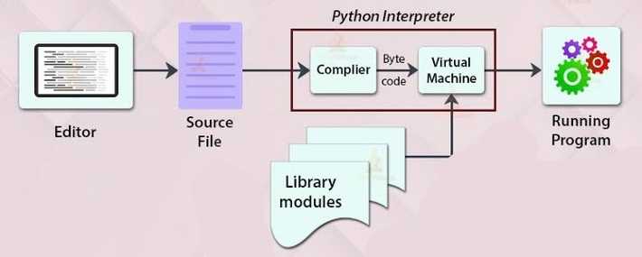
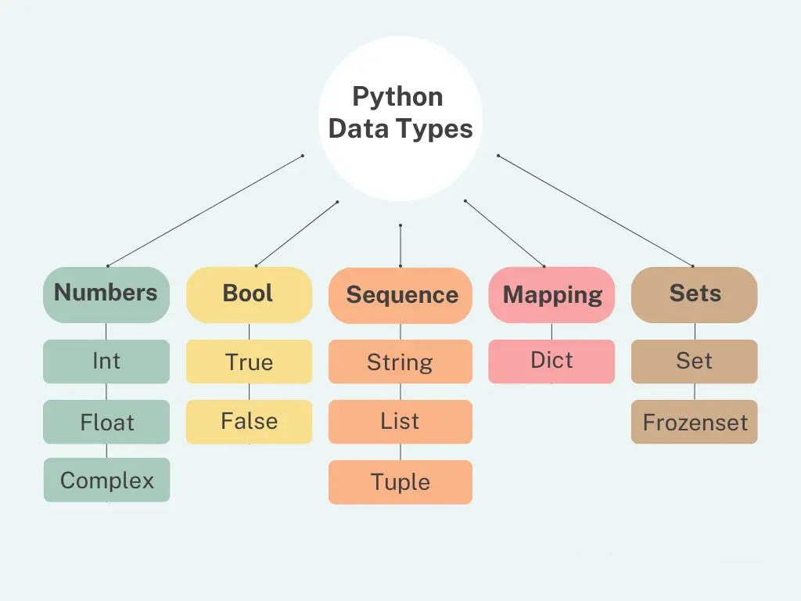

01: Overview
02: Key Features of Python
03: Limitations of Python
04: What is an Interpreter
05: print() Function
06: Basic Structure of Python Program
07: Keywords
08: Identifiers
09: Variables
10: Data Types
11: Operators
12: Operator Precedence
13: Type Conversion
14: Conditional Statements
15: Loop
16: Loop Control Statements
Overview
- Python is a simple, easy to learn, high-level, interpretive, general-purpose, free and open source, and Powerful programming language.
- It has efficient high-level data structures and a simple but effective approach to object-oriented programming.
- Python was introduced in the late 1980s and its implementation was started in December 1989 by Dutch programmer Guido van Rossum at CWI (Centrum Wiskunde & Informatica) Research lab in the Netherlands.
- Python based on ABC, C, Bourne Shell, Modula-3, Perl, Haskell, and Lisp
- Named after Guido's favourite BBC comedy TV show "Monty Python's Flying Circus"
Key Features of Python
-
Easy to learn and Use:
- It has a simple structure, a few keywords, and clearly straightforward defined syntax.
- There is no use of the semicolon or curly-brackets for defining scope in Python.
- Its indentation (spaces or tabs) defines the block of code.
- Therefore, Python programs are easy to read and understand.
-
Expressive Language:
- Python (like Perl) is an expressive language. Its syntax is very easy.
- We can perform complex tasks by writing a few lines of code in Python as compared to other programming language.
-
Interpreted Language:
- Python is an interpreted based language similar to Perl and PHP.
- It means its script code is executed one line at a time and not all at once, like in other programming languages. The line-by-line execution makes it easy to debugging the Python code.
- Python has also a built-in debugging feature.
- Beside it, Python is not a fully compiled language.
- The code is automatically compiled into the machine readable byte codes and then executed.
-
Cross-platform Language:
- Python is a cross-platform language, which means it is platform independent. We can run the Python code equally on different platforms, such as Windows, Linux, UNIX, and Macintosh, etc.
- This is because the source code of python first is converted to a machine readable byte code, which is then interpreted.
-
Free and Open Source:
- Python is a free and open-source programming language. It is freely available for everyone. We can install it on our computer free of cost on any operating system with no copyright issues.
-
Object-Oriented Language:
- Python supports object-oriented style of programming (OOP) that encapsulates the code within objects.
- OOP is a modern programming paradigm that is based on the concepts of classes and objects.
- It breaks up the code into several segments that messages back and forth using classes.
- Object-oriented programming supports inheritance, polymorphism, data encapsulation, inheritance, polymorphism, etc.
- Its procedure helps to programmer to write reusable code and develop powerful applications in less code with a good level of abstraction.
-
Interactive:
- Python is really interactive, so we can write a program directly on the Python prompt.
- The advantage of being Python interactive is we can interact directly with the interpreter and get the immediate results.
- We can also use the prompt to test out small bits of codes to see if they work
-
Easy to Maintain:
- We can easily maintain the source code of Python programming language.
-
Extensible Feature:
- We can integrate Python with other languages such as C, C++, and Java.
- It allows us to execute the code written in other programming languages. This implies that we can compile the code in other languages like C/C++, or Java, and then can use that in our python code, which we can compile and run anywhere
-
High-Level Language:
- Python is a high-level programming language, which means it enables the programmer to write programs that are not specific to a particular type of computer or designed for a specific task.
- A high-level programming language is easier to write and understand.
- Programmers can easily write and understand or interpret the code.
- It is closer to human language and far to machine language.
- For a computer to understand and run a program designed with a high-level language, we must compile it into machine language.
-
Broad Standard Library:
- One of the main reasons for Python's popularity is its large standard library for the various fields such as machine learning, data science, web developer, and also for the scripting.
- Python contains a rich set of modules and functions that are cross-platform.
- Web Development Libraries: Django, Flask, Bottle, Tornado, Pyramid, web2py, CherryPy, CubicWeb
- GUI Development Libraries: Tkinter, Libavg, PyGObject, PySimpleGUI, PyQt, PySide, Kivy, wxPython, PyForms
- Scientific and Numeric Libraries: SciPy, Numpy, Pandas, IPython, TensorFlow, Seaborn, Matplotlib
-
Dynamic Typed Language:
- Python is a dynamically typed language.
- This means that the Python interpreter does type checking of variable at the runtime.
- Interpreter assigns the type of variable based on the value of variable at the runtime.
- We don't declare the data type of a variable explicitly in Python.
- Interpreter decides the data type of variable and its memory allocation at runtime.
- Interpreter automatically allocates the memory to the variable at runtime when we assign a value to the variable.
-
GUI Programming Support:
- Python provides many graphical user interface (GUI) libraries that are used for the developing Desktop web application.
-
Databases Support:
- When we develop an application, we may need a database.
- Python language provides Python Database API (DB-API) that provides an interface to all major commercial databases.
- MySQL, PostgreSQL, Microsoft SQL, Oracle, Informix, etc. are some databases supported by standard python.
- To use it, just import the interface for the particular database.
- Using Python, we can work with both relational and non-relational databases.
-
Automation Tool:
- Python is a great tool for the automation process.
- We can write simple Python programs to automate routine tasks, such as repetitive or time-consuming.
-
Scalable:
- This feature of Python provides a better structure and supports for large programs.
Limitations of Python
- Python is an interpreter-based language. Therefore, it is slower in the terms of execution of programs as compared to other programming languages
- As we know python is a high-level language, it also uses several layers to communicate with the operating system and computer hardware
- Graphics applications such as video games make the program to run slower.
What is an Interpreter

- An interpreter is simple software that executes the source code line by line
- An interpreter is a program/software that converts a programming language into Machine language that a computer can understand and execute.
- While Interpreting a code, an interpreter will report any error it finds in the code. If it does not find any error it will translate the code into Machine language.
- The Python interpreter's name is CPython. It is written in C Language.
print() Function
-
The
print()function prints the specified message to the screen, or other standard output device. - The message can be a string, or any other object, the object will be converted into a string before written to the screen.
-
Syntax:
print(object(s), sep=separator, end=end, file=file, flush=flush)
# Print Fucntion
print("Hello World!")
print(22+44)
Parameter Values:
| Parameter | Description |
|---|---|
| object(s) | Any object, and as many as you like. Will be converted to string before printed |
| sep = 'separator' | Specify how to separate the objects, if there is more than one. Default is ' ' (Optional) |
| end='end' | Specify what to print at the end. Default is '\n' (line feed) (Optional) |
| file | An object with a write method. Default is sys.std out (Optional) |
| flush | A Boolean, specifying if the output is flushed (True) or buffered (False). Default is False (Optional) |
Basic Structure of Python Program
-
Documentation section:
- The documentation section consists of a set of comment lines giving the name of the program, the author, and other details, which the programmer would like to use later.
-
Imports:
- The imports section provides instructions to the interpreter to link functions from the module such as using the import statement.
-
Global variables section:
- Some variables are used in more than one function.
- Such variables and are declared in the global declaration section that is outside of all the functions.
-
Class definitions:
- Here, we can declare different classes.
- Classes are a collection of data members and data functions.
-
User-defined functions:
- This section also declares all the user-defined functions.
-
Executable part:
- There is at least one statement in the executable part.
# Documentation Section
# Write a Program to show use of scope variable using function
# Import Section
import math
# Global Variables Section
x = 50
# Class Defination Section
class Person:
# User Defined Functions
def __init__(self, name, age):
self.name = name
self.age = age
# User Defined Functions
def greet(self):
print("Hello my name is "+self.name)
print("My age is "+self.age)
# Executable Part
p1 = Person("John", "19")
p2 = Person("Alex", "20")
p1.greet()
p2.greet()
Keywords
Keywords are reserved words that cannot be used as a variable name, function name, or any other identifier.
| Keyword | Description |
|---|---|
| and | A logical operator |
| as | To create an alias |
| assert | For debugging |
| break | To break out of a loop |
| class | To define a class |
| continue | To continue to the next iteration of a loop |
| def | To define a function |
| del | To delete an object |
| elif | Used in conditional statements, same as else if |
| else | Used in conditional statements |
| except | Used with exceptions, what to do when an exception occurs |
| False | Boolean value, result of comparison operations |
| finally | Used with exceptions, a block of code that will be executed no matter if there is an exception or not |
| for | To create a for loop |
| from | To import specific parts of a module |
| global | To declare a global variable |
| if | To make a conditional statement |
| import | To import a module |
| in | To check if a value is present in a list, tuple, etc. |
| is | To test if two variables are equal |
| lambda | To create an anonymous function |
| None | Represents a null value |
| nonlocal | To declare a non-local variable |
| not | A logical operator |
| or | A logical operator |
| pass | A null statement, a statement that will do nothing |
| raise | To raise an exception |
| return | To exit a function and return a value |
| True | Boolean value, result of comparison operations |
| try | To make a try...except statement |
| while | To create a while loop |
| with | Used to simplify exception handling |
| yield | To end a function, returns a generator |
Identifiers
- Identifier is a user-defined name given to a variable, function, class, module, etc.
- They are case-sensitive
- It is a good programming practice to give meaningful names to identifiers to make the code understandable.
-
We can also use the
isidentifier()method to check whether a string is a valid identifier or not.
Rules for Naming Python Identifiers:
- It cannot be a reserved python keyword.
- It should not contain white space.
- It can be a combination of A-Z, a-z, 0-9, or underscore.
- It should start with an alphabet character or an underscore ( _ ).
- It should not contain any special character other than an underscore ( _ ).
Variables
- Variable is containers that store values.
- Python is not statically typed.
- We do not need to declare variables before using them or declare their type.
- A variable is created the moment we first assign a value to it.
num = 12
name = "John Doe"
- Variable names can be any length can have capitalized, lowercase (start to finish, a to z), the digit (0-9), and highlight character( _ ).
- Local Variable: The variables that are declared within the function and have scope within the function are known as local variables.
# Local Variable Example
def add():
a = 15
b = 25
c = a+b
print(c)
add()
print(c)
# Output
40
ERROR!
Traceback (most recent call last):
File "<main.py>", line 10, in <module>
NameError: name 'c' is not defined
- Global Variables: The variables that are declared globally and have scope in entire program known as Global variables.
# Global Variable Example
a = 15 # Global Variable
b = 25 # Global Variable
def add():
c = a+b
print(c) # Local Variable
print(c)
# Output: 40
Ways to Assign Variables
# 01. Declaring a varibale and assigning value
age = 19
# 02. Assigning Multiple Values
result = mark1, amrk2, mark3 = 78, 88, 84
# 03. Reassigning Values
temp = 10
temp = "Hello"
temp = False
# 04. Deleting a Vriable
del temp
print(temp) # ERROR: name 'temp' is not defined
User Input
-
By default
input()takes values asStringtype.
name = input("Enter Your Name: ")
age = int(input("Enter Your Age: "))
print(name)
print(age)
Data Types

Int Data Type
-
In Python, the
intdata type is a numeric type used to represent whole integer number as opposition withfloatnumber. -
Creating a
intis done by using the whole integer number without quotes or using theint()constructor function
Float Data Type
-
In Python, the
floatdata type is a numeric type that is used to represent number with floating point values as opposition with wholeintnumber. -
Creating a
floatis done by using the number using the decimal point (.) without quotes or using thefloat()constructor function.
Complex Data Type
-
In Python, the
complexdata type represents complex numbers that contain a real part and an imaginary part. In complex numbers, the real part and the imaginary part are floating-point numbers denoted by the suffix “j” or “J”. - Complex numbers are used often in mathematical and scientific calculations.
# int Type
i = 3
print(type(i)) # <class 'int'>
# float Type
f = 3.1
print(type(f)) # <class 'float'>
# complex Type
z = 2 + j # Real part: 2, imaginary part: 5
print(type(z)) # <class 'complex'>
Bool Data Type
-
In Python, the
booldata type is used to represent Boolean values (True,False). Booleans are used to evaluate expressions and return the BooleanTrueorFalsebased on the result of the expression.
# Boolean expression
x = 10
y = 5
result = x > y
print(result) # True
print(type(result)) # <class 'bool'>
Str Data Type
-
In Python, the
strdata type is used to define text component enclosing a sequence of characters within single-quotes or double-quotes. Python strings can contain letters, numbers or special characters.
# String data type
greet = "Hello"
print(type(greet)) # <class 'str'>
# Print string
print(greet)
List Data Type
-
In Python, the
listdata type is used to store ordered sequence of elements. Python lists are ordered collections that can contain elements of various data types (str, list, dicts, …). List elements can be accessed, iterated, and removed. -
Slicing or accessing elements of a list is done using the square
brackets (
[]) notation. -
Creating a list is done using the square brackets (
[]) or thelist()constructor function
ls = ['hello', 1, True, [1, 2]]
print(ls) # ['hello', 1, True, [1, 2]]
print(type(ls)) # <class 'list'>
Tuple Data Type
- In Python, Tuples are a data structure of the sequence type that store a collection of data.
-
Python Tuples have these 5 characteristics.
- ordered
- unchangeable
- immutable
- allow duplicate value
- allow values with multiple data types
-
Creating a tuple is done using the parentheses (
()) or thetuple()constructor function.
t = (1, 2, 3, 4, 5)
print(t) # (1, 2, 3, 4, 5)
print(type(t)) # <class 'tuple'>
Dict Data Type
-
In Python, dictionaries are
an unordered collection of key-value pairs stored as a
dictdata type. Python dictionaries are a mappings data type used to store collections of data. -
Creating a dictionary is done adding key, value pairs inside curly
brackets (
{}) or using thedict()constructor function. -
Values in dictionaries can be selected passing the key string inside
the square brackets (
[]) of the dictionary object.
d = {
'name': 'John',
'last_name': 'Doe'
}
print(d) # {'name': 'John', 'last_name': 'Doe'}
print(type(d)) # <class 'dict'>
Set Data Type
-
In Python, sets are
an unordered collection unique elements (no duplicate
values). A Python
setis a mutable object where you can add, remove, or modify elements after creating it. -
Creating a set is done adding comma-separated values inside curly
brackets (
{}) or using theset()constructor function. -
Python Sets have a multiple characteristics:
- Duplicates are not allowed
- They can have Multiple data Types
- Sets Can’t Be Accessed with the Index
- Not Subscriptable
s = {1,2,3}
print(s) # {1, 2, 3}
print(type(s)) # <class 'set'>
Frozenset Data Type
-
In Python, the
frozensetdata type represents an immutable set. -
Creating a
frozensetis done using thefrozenset()constructor function. Once created, you cannot add, remove, or modify elements to thefrozenset. -
The difference between a
setand afrozensetin Python is that thesetis mutable and thefrozensetis not. You can change a set by adding, removing or modifying its elements, but doing so with afrozensetwould result in an error.
# set
my_set = {1, 2, 3, 4}
my_set.add(5)
my_set.remove(2)
print(my_set) # {1, 3, 4, 5}
# frozenset
my_frozenset = frozenset([1, 2, 3, 4])
# Adding or removing elements from frozenset returns an error
my_frozenset.add(5) # AttributeError
my_frozenset.remove(2) # AttributeError
Operators
Arithmetic Operators
| Operator | Meaning | Example |
|---|---|---|
| + | Add two operands or unary plus | x + y +2 |
| – | Subtract right operand from the left or unary minus | x – y -2 |
| * | Multiply two operands | x * y |
| / | Divide left operand by the right one (always results into float) | x / y |
| % | Modulus – remainder of the division of left operand by the right | x % y (remainder of x/y) |
| // | Floor division – division that results into whole number adjusted to the left in the number line | x // y |
| ** | Exponent – left operand raised to the power of right | x**y (x to the power y) |
Assignment Operator
| Operator | Meaning | Example |
|---|---|---|
| = | Assign the value of the right side of the expression to the left side operand | c = a + b |
| += | Add right side operand with left side operand and then assign the result to left operand | a += b |
| -= | Subtract right side operand from left side operand and then assign the result to left operand | a -= b |
| *= | Multiply right operand with left operand and then assign the result to the left operand | a *= b |
| /= | Divide left operand with right operand and then assign the result to the left operand | a /= b |
| %= | Divides the left operand with the right operand and then assign the remainder to the left operand | a %= b |
| //= | Divide left operand with right operand and then assign the value(floor) to left operand | a //= b |
| **= | Calculate exponent(raise power) value using operands and then assign the result to left operand | a **= b |
| &= | Performs Bitwise AND on operands and assign the result to left operand | a &= b |
| \= | Performs Bitwise OR on operands and assign the value to left operand | a \= b |
| ^= | Performs Bitwise XOR on operands and assign the value to left operand | a ^= b |
| >>= | Performs Bitwise right shift on operands and assign the result to left operand | a >>= b |
| <<= | Performs Bitwise left shift on operands and assign the result to left operand | a <<= b |
| := | Assign a value to a variable within an expression | a := exp |
Comparison Operator
| Operator | Meaning | Example |
|---|---|---|
| > | Greater that – True if left operand is greater than the right | x > y |
| < | Less that – True if left operand is less than the right | x < y |
| == | Equal to – True if both operands are equal | x == y |
| != | Not equal to – True if operands are not equal | x != y |
| >= | Greater than or equal to – True if left operand is greater than or equal to the right | x >= y |
| <= | Less than or equal to – True if left operand is less than or equal to the right | x <= y |
Logical Operators
| Operator | Meaning | Example |
|---|---|---|
| and | True if both the operands are true | x and y |
| or | True if either of the operands is true | x or y |
| not | True if operand is false (complements the operand) | not x |
Bitwise Operator
| Operator | Meaning | Example |
|---|---|---|
| & | Bitwise AND | x& y |
| \ | Bitwise OR | x \ y |
| ~ | Bitwise NOT | ~x |
| ^ | Bitwise XOR | x ^ y |
| >> | Bitwise right shift | x>>2 |
| << | Bitwise left shift | x<<2 |
Membership Operator
| Operator | Meaning |
|---|---|
| in | Evaluates to true if it finds a variable in the specified sequence and false otherwise. |
| not in | Evaluates to true if it does not finds a variable in the specified sequence and false otherwise. |
Identity Operator
| Operator | Meaning |
|---|---|
| is | Evaluates to true if the variables on either side of the operator point to the same object and false otherwise. |
| not is | Evaluates to false if the variables on either side of the operator point to the same object and true otherwise. |
Operator Precedence
| Operators | Description |
|---|---|
| ( ) | Parentheses (grouping) |
| ** | Exponentiation (raise to the power) |
| ~+ – | Complement, unary plus and minus (method names for the last two are +@ and -@) |
| */ % // | Multiply, divide, modulo and floor division |
| + – | Addition and subtraction |
| >> << | Right and left bitwise shift |
| & | Bitwise ‘AND’ |
| ^\ | Bitwise exclusive ‘OR’ and regular ‘OR’ |
| <= < > >= | Comparison operators |
| < > == != | Equality operators |
| = %= /= //= -= += = *= | Assignment operators |
| is, is not | Identity operators |
| in, not in | Membership operators |
| not or and | Logical operators |
Type Conversion
- The act of changing an object's data type is known as type conversion.
- The Python interpreter automatically performs Implicit Type Conversion.
- Python prevents Implicit Type Conversion from losing data.
- The user converts the data types of objects using specified functions in explicit type conversion, sometimes referred to as type casting.
- When type casting, data loss could happen if the object is forced to conform to a particular data type.
- Implicit Type Conversion: In Implicit type conversion of data types in Python, the Python interpreter automatically converts one data type to another without any user involvement.
- Explicit Type Conversion: The data type is manually changed by the user as per their requirement. With explicit type conversion, there is a risk of data loss since we are forcing an expression to be changed in some specific data type.
# Implicit Type Conversion
celcius = 25
fahrenheit = (celcius*9/5)+32 # int -> float
print(fahrenheit) # 77.0
# Explicit Type Conversion
num = 15
number = str(num) # int -> string
print(number) # 15
Conditional Statements
if Statement
- The if statement is the most simple decision-making statement.
- It is used to decide whether a certain statement or block of statements will be executed or not.
num = 15
if (num%2 == 0):
print("Number is Even)
if-else Statement
-
We can use the
elsestatement with theifstatement Python to execute a block of code when the Python if condition is false
num = 15
if (num%2 == 0):
print("Number is Even)
else:
print("number is Odd)
elif Statement
- As soon as one of the conditions controlling the if is true, the statement associated with that if is executed, and the rest of the ladder is bypassed.
- If none of the conditions is true, then the final “else” statement will be executed.
mark = 87
if mark>=90:
print("Grade: A")
elif mark >= 75:
print("Grade: B")
elif mark >= 60:
print("Grade: C")
elif mark >= 40:
print("Grade: D")
else:
print("Fail)
Nested if-else Statement
# Example of nested if-else
x = 10
y = 5
if x > y:
print("x is greater than y")
elif x < y:
print("x is less than y")
else:
if x == y:
print("x is equal to y")
else:
print("This should never happen")
Loop
for Loop
- A for loop is used for iterating over a sequence (that is either a list, a tuple, a dictionary, a set, or a string).
- With the for loop we can execute a set of statements, once for each item in a list, tuple, set etc
# Multiplication Table using For Loop
num = 5
for i in range(1, 11):
print(num, "x", i, " = ", num*i)
# Iterating over a list
fruits = ["apple", "banana", "cherry"]
for fruit in fruits:
print(fruit)
while Loop
- While loops are used in Python to iterate until a specified condition is met.
- However, the statement in the program that follows the while loop is executed once the condition changes to false
# Multiplication Table Using While Loop
num = 5
i = 1
while(i<=10):
print(num, "x", i, " = ", num*i)
i += 1
| for Loop | while Loop |
|---|---|
| It is used when the number of iterations is known. | It is used when the number of iterations is not known |
| In case of no condition, the loop is repeated infinite times | In case of no condition, an error will be shown |
| Initialization is not repeated. | Initialization is repeated if carried out during the stage of checking. |
| Statement of Iteration is written after running. | It can be written at any place. |
| Initialization can be in or out of the loop | Initialization is always out of the loop |
| The nature of the increment is simple. | The nature of the increment is complex. |
| Used when initialization is simple | Used when initialization is complex. |
Loop Control Statements
continue Statement
- This command skips the current iteration of the loop. The statements following the continue statement are not executed once the Python interpreter reaches the continue statement.
# Skip printing when i equals 2
for i in range(5):
if i == 2:
continue
print(i)
break Statement
- This command terminates the loop's execution and transfers the program's control to the statement next to the loop.
# Break the loop when i equals 3
for i in range(5):
if i == 3:
break
print(i)
pass Statement
- The pass statement is used when a statement is syntactically necessary, but no code is to be executed.
for i in range(5):
pass # Loop does nothing